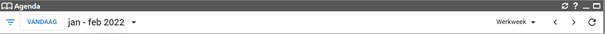
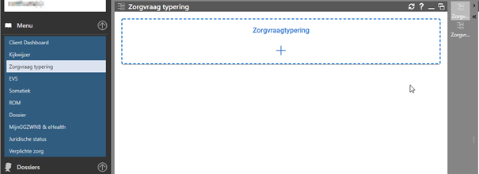

20 januari 2022 , de 2022.01.03 versie van het H3 Ambulant, klinisch en Basis GGZ portaal.
Hierbij een korte beschrijving van de belangrijkste aanpassingen.
Diverse verbeteringen/uitbreidingen in de agenda functionaliteit.
- Banner is aangepast
De knop vandaag is naar de linkerzijde verplaatst en de weergave knop naar de rechterzijde.
- Werkweek weergave is standaard ( dit was de week weergave)
- Favorieten zijn mogelijk die nu onthouden worden
Door het sterretje wat achter de naam komt te staan aan te klikken, wordt deze onthouden.
Als het sterretje niet aangeklikt wordt werkt het zoals voorheen ( de geselecteerde agenda verdwijnt bij uitloggen en moet opnieuw geselecteerd worden.
Als de vink in de checkbox voor de naam aangevinkt wordt , zal deze agenda ook default geopend worden.
Vink je die niet aan dan wordt de agenda niet standaard geopend maar kun je door de vink te plaatsen deze in een handeling openen.
Deze functionaliteit is beschikbaar voor :
- Zorgverleners
- Kamers
- Apparaten
Zorgvraagtypering via menu keuze ‘Zorgvraag typering’
Afhankelijk van autorisaties is de zorgvraag typering toegankelijk via deze menu keuze
